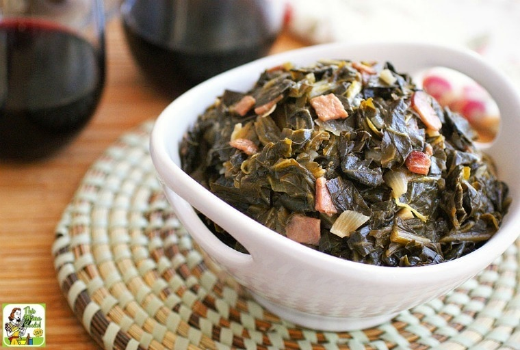

Home
Greens

Description
This is a recipe for the most delicious Greens you will ever taste!
Ingredients
- Collard Greens
- Bacon grease
- Ham
- Broth
- Vinegar
- Spices
Steps
- Heat the bacon grease or olive oil in a large stockpot over medium heat.
- Add the onion and cook until it starts turning color.
- Add the collard greens to the pot and sauté for 5 minutes.
- Add the vinegar and cook down for 5 minutes.
- Add the maple or sorghum syrup, stock, ham, and kosher salt to the pot. Cook over medium heat stirring occasionally until stock is just about gone and collards are tender.
- Season with salt and black pepper to taste. Serve while hot.
- Keep leftovers in the refrigerator.